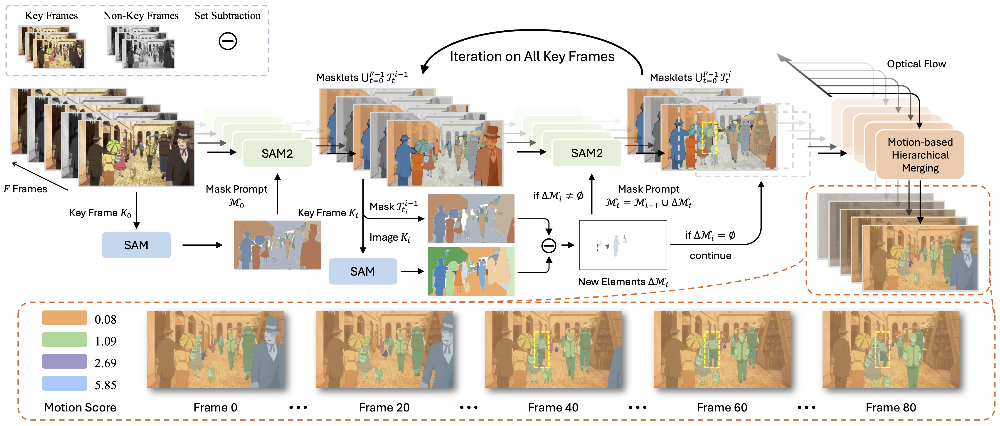
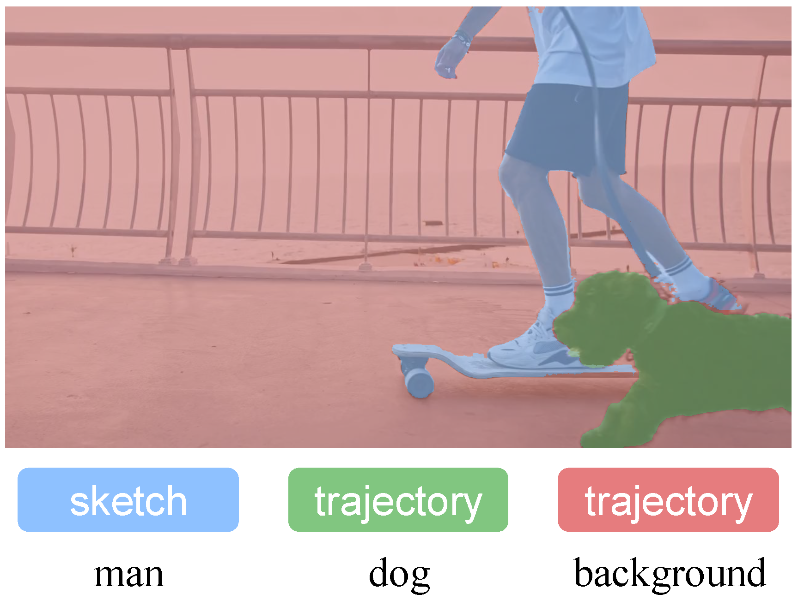

We have extended LayerAnimate to the DiT (Wan2.1 1.3B) variant, enabling the generation of 81 frames at 480 × 832 resolution. It performs surprisingly well in the Real-World Domain.
We update LayerAnimate and support trajectory control for a flexible composition of various layer-level controls. The video on BiliBili and YouTube illustrates our original framework, which will be updated soon.
Traditional animation production decomposes visual elements into discrete layers to enable independent processing for sketching, refining, coloring, and in-betweening. Existing anime generation video methods typically treat animation as a distinct data domain different from real-world videos, lacking fine-grained control at the layer level. To bridge this gap, we introduce LayerAnimate, a novel video diffusion framework with layer-aware architecture that empowers the manipulation of layers through layer-level controls. The development of a layer-aware framework faces a significant data scarcity challenge due to the commercial sensitivity of professional animation assets. To address the limitation, we propose a data curation pipeline featuring Automated Element Segmentation and Motion-based Hierarchical Merging. Through quantitative and qualitative comparisons, and user study, we demonstrate that LayerAnimate outperforms current methods in terms of animation quality, control precision, and usability, making it an effective tool for both professional animators and amateur enthusiasts. This framework opens up new possibilities for layer-level animation applications and creative flexibility.

Layer Curation Pipeline. The bottom orange dashed box illustrates curated layer masks with different motion scores, where motion scores remain temporally constant throughout the animation clip. Yellow dashed boxes denote new elements absent in the first frame, demonstrating our pipeline's capability to segment dynamically appearing elements. We transparently present some frames of masklets to highlight the new elements in Key Frame Ki.

Overview of LayerAnimate. LayerAnimate establishes a layer-level control architecture for animation generation. It enables the flexible composition of control signals at the layer level, allowing for injecting distinct conditions (e.g., motion scores, trajectories, and sketches) for different layers. For simplicity, the text and image injection branches are omitted from the core architecture schematic.
Qualitative comparison with other competitors. We select several clips to exemplify the representative characteristics of animation, including particle effects in Image-to-Video, a knife appearing off-screen in Image-to-Video with Sketch, and an unconventional fade-in visual style in Interpolation with Sketch.
Composite Control. LayerAnimate provides multiple user-friendly control options at the layer level, leading to a composite control manner.

Sketch control for the man layer.
Trajectory control for the dog and background.
Move the dog with the static background.
@article{yang2025layeranimate,
author = {Yang, Yuxue and Fan, Lue and Lin, Zuzeng and Wang, Feng and Zhang, Zhaoxiang},
title = {LayerAnimate: Layer-level Control for Animation},
journal = {arXiv preprint arXiv:2501.08295},
year = {2025},
}